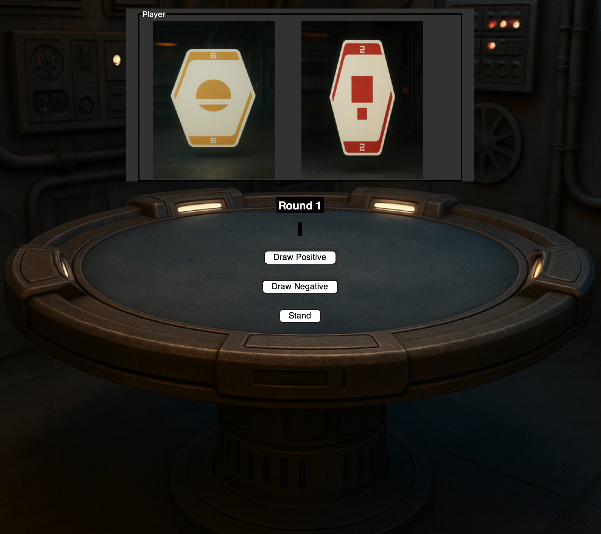

Games
Kessel Sabacc
Final project for "Prograing with Functions at Brigah Young Univerity Idaho. This is a card game from the Star Wars universe that uses two decks, one negative the other positive, to create a number to win. Uses python language and tkinter for GUI.
Doctor Who Wordle